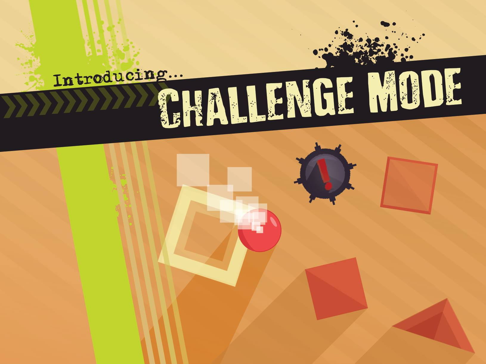

Overview
Surreality is an iOS physics-based puzzle game developed in Swift over 6 weeks. The game has 200+ levels, amassing 250+ downloads on the iOS App Store. The game features beautiful graphics and well-designed levels, with various different special blocks slowly introduced into the game as time goes on.
I spent 400+ hours total over these six months and various times afterwards developing the app. I carefully designed the UX, slowly introducing concepts so the user clearly understands what to do in each level. I later introduced two major updates to the game, adding new themes, skins, and modes. For my efforts, I was awarded the audience choice award out of 100+ other apps.

Process
Development
I designed and developed the game over a five-week period. I started by coding the main mechanics of the game, introducing only a few levels. As time went on, I considered the user experience, designing dozens and dozens of levels at a time.
The interface design was a graphics design I wanted to work with for a long time. The shadows, colors, and stripes were simply so appealing. There are four different themes, with them randomly interchanging as levels are completed. Particles are used to add to the "surreal" ambience of the game, and animations were heavily utilized to add to the smooth gameplay.

Testing
Once a few dozen levels were completed, I tested the app with many different test users, using implemented analytics to track their progress and pitfalls. I found that the beginning level curve was too steep, so I expanded the first five levels to twenty-five, teaching small but important concepts each and every single level.
After testing, I designed the rest of the game as a 200+ level tutorial, teaching concepts every single level. If a level does not teach something, it is not useful and cut. In addition, I implemented difficulty spikes to introduce feelings of accomplishment after completion. Post-launch analytics indicate that these spikes do work.
Updates
After launch, I updated the game twice with major overhauls. The first I introduced a snow theme, adding particles and snow layers to each block to celebrate the holidays. I also introduced 12 skins that are unlocked in special ways, with plans to add in more in the form of in-app purchases. The second update introduced a new challenge mode, which challenged the user to complete the first ~80 levels without using momentum, many of which are incredibly difficult.
